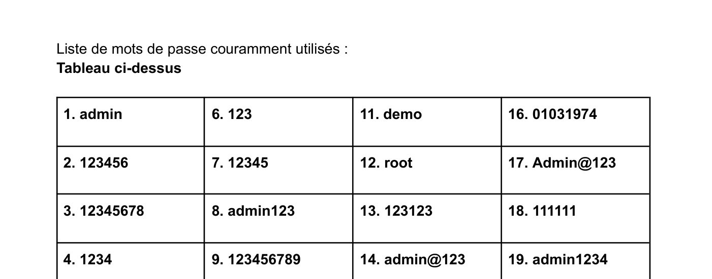
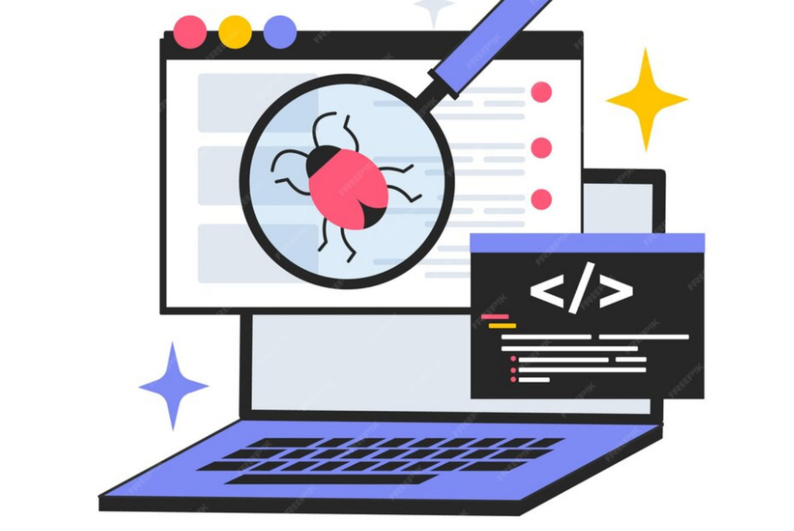

Se sensibiliser à l'hygiène informatique et à la cybersécurité
Un « catalogue de vulnérabilités » rédigé à trois pour sensibiliser aux dangers qui menacent les systèmes d'information, et surtout aux bons réflexes pour s'en protéger.
Équipe : Travail en trio : Matéo, Yann et Imane (une partie rédigée par chacun)

Contexte et objectif
Contexte
Le numérique évolue en permanence et chaque maillon de la chaîne peut devenir une porte d'entrée pour un attaquant. L'équipe s'est fixé la problématique suivante : « En quoi notre catalogue sur la vulnérabilité d'un système informatique va-t-il vous ouvrir les yeux sur les dangers de l'informatique ? »
Objectif
Produire un document clair qui explique ce qu'est une vulnérabilité, ses conséquences (perte de données, interruption de service, pertes financières, atteinte à la réputation) et les solutions concrètes pour s'en prémunir.
Ma mission
Mon rôle
Dans ce catalogue, j'ai rédigé la troisième partie, consacrée à deux familles de failles :
- Vulnérabilités logicielles : désérialisation non sécurisée, conditions de course (race condition), exposition de données sensibles
- Méthodes des attaquants : balayage avec Nmap, scripts et outils détournés (Metasploit), ingénierie sociale et phishing
- Contrôle d'accès physique (badges RFID, verrouillage électronique, biométrie) et logique (2FA, RBAC, accès conditionnel, audit)
- Attaques par force brute (simple, par dictionnaire, hybride) et failles Bluetooth (BlueBorne, Bluesnarfing, spoofing, sniffing)
Travaux réalisés
Recherche documentaire
Identification de cas réels pour illustrer chaque faille : WebLogic d'Oracle (2019), noyau Linux (2020), fuites MyFitnessPal et Marriott (2018).
Analyse des menaces
Pour chaque vulnérabilité : principe, exemple d'attaque, méthode d'exploitation et conséquences pour l'entreprise.
Recommandations
Mesures de protection concrètes : validation des entrées, correctifs, chiffrement, gestion des droits, pare-feu et détection d'intrusion.
Bonnes pratiques mots de passe
Liste des 20 mots de passe les plus utilisés à bannir et méthodes pour créer des phrases de passe longues (12 à 16 caractères minimum).
Outils et technologies
Illustrations du projet
Images extraites du rapport. Cliquez pour agrandir.


Difficultés et solutions
Résultats obtenus
- Un catalogue de 25 pages structuré par thème, avec sommaire et sources (OWASP, Proofpoint…)
- Une partie personnelle complète sur les failles logicielles et le contrôle d'accès
- Des recommandations pratiques réutilisables pour sensibiliser des utilisateurs
Compétences développées
Compétences
- Analyse des risques et des vulnérabilités d'un SI
- Veille et recherche documentaire en cybersécurité
- Rédaction technique et vulgarisation
- Travail collaboratif sur un document commun
Ce que ce projet m'a apporté
Ce premier projet m'a donné les réflexes de base de l'hygiène informatique : penser « attaquant » pour mieux protéger, et toujours accompagner un risque d'une mesure concrète.
Envie d'aller plus loin ?
Le document complet détaille toutes les configurations, mesures et analyses.